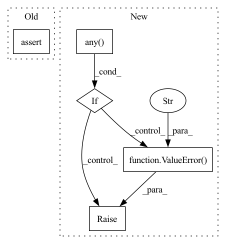

Pattern ID :40293
Before Change
)
assert not torch.isnan(label_predictions).any()
assert not torch.isnan(mortality_label).any()
// For each trajectory, we get n_traj_samples samples from z0 -- compute loss on all of them
mortality_label = mortality_label.repeat(n_traj_samples, 1)After Change
if torch.isnan(label_predictions).any():
raise ValueError("label_predictions contain NaNs")
if torch.isnan(mortality_label).any() :
raise ValueError("mortality_label contains NaNs" )
// For each trajectory, we get n_traj_samples samples from z0 -- compute loss on all of them
mortality_label = mortality_label.repeat(n_traj_samples, 1)
ce_loss = nn.BCEWithLogitsLoss()(label_predictions, mortality_label)In pattern: SUPERPATTERN
Frequency: 5
Non-data size: 5
Instances Fragment ID: 114409681
Project Name: samholt/neurallaplace
Commit Name: 6fe8140cd0c4ac6b1630e136106e894122d81288
Time: 2022-07-04
Author: bogdan.cebere@gmail.com
File Name: torchlaplace/data_utils.py
M Class Name: AnonimousClass
N Class Name: AnonimousClass
M Method Name: compute_binary_CE_loss(2)
N Method Name: compute_binary_CE_loss(2)
M Parent Class:
N Parent Class:
M File Name: torchlaplace/data_utils.py
N File Name: torchlaplace/data_utils.py
M Start Line: 809
M End Line: 810
N Start Line: 816
N End Line: 822
Before Change
def forward(self, data, time_steps, run_backwards=True, save_info=False):
assert not torch.isnan(data).any()
assert not torch.isnan(time_steps).any()
n_traj, n_tp, n_dims = data.size()
latent = self.run_odernn(data, time_steps, run_backwards)After Change
init_network_weights(self.transform_z0)
def forward(self, data, time_steps, run_backwards=True, save_info=False):
if torch.isnan(data).any() :
raise ValueError("Mask should not contain NaNs" )
if torch.isnan(time_steps).any():
raise ValueError("Time steps should not contain NaNs")
n_traj, n_tp, n_dims = data.size() Fragment ID: 114409683
Project Name: samholt/neurallaplace
Commit Name: 6fe8140cd0c4ac6b1630e136106e894122d81288
Time: 2022-07-04
Author: bogdan.cebere@gmail.com
File Name: torchlaplace/data_utils.py
M Class Name: Encoder_z0_ODE_RNN
N Class Name: Encoder_z0_ODE_RNN
M Method Name: forward(5)
N Method Name: forward(5)
M Parent Class: nn.Module
N Parent Class: nn.Module
M File Name: torchlaplace/data_utils.py
N File Name: torchlaplace/data_utils.py
M Start Line: 706
M End Line: 707
N Start Line: 711
N End Line: 716
Before Change
if self._update_covs is None:
return self._update_covs
update_covs = torch.stack(self._update_covs, 1)
assert update_covs.shape == self.state_covs.shape
return update_covs
def get_state_at_times(self,After Change
return None
if not isinstance(self._update_covs, torch.Tensor):
self._update_covs = torch.stack(self._update_covs, 1)
if torch.isnan(self._update_covs).any() :
raise ValueError("`nans` in `update_covs`" )
return self._update_covs
def get_state_at_times(self,
times: Union[np.ndarray, np.datetime64], Fragment ID: 114409685
Project Name: strongio/torchcast
Commit Name: c7c8de8bb07b5ae493c98a74ecfcbaac9ddab80d
Time: 2022-02-27
Author: jacob.dink@strong.io
File Name: torchcast/state_space/predictions.py
M Class Name: Predictions
N Class Name: Predictions
M Method Name: update_covs(1)
N Method Name: update_covs(1)
M Parent Class: nn.Module
N Parent Class: nn.Module
M File Name: torchcast/state_space/predictions.py
N File Name: torchcast/state_space/predictions.py
M Start Line: 99
M End Line: 102
N Start Line: 107
N End Line: 112
Before Change
if self._update_means is None:
return self._update_means
update_means = torch.stack(self._update_means, 1)
assert update_means.shape == self.state_means.shape
return update_means
@cached_propertyAfter Change
return None
if not isinstance(self._update_means, torch.Tensor):
self._update_means = torch.stack(self._update_means, 1)
if torch.isnan(self._update_means).any() :
raise ValueError("`nans` in `state_means`" )
return self._update_means
@cached_property
def update_covs(self) -> torch.Tensor: Fragment ID: 114409684
Project Name: strongio/torchcast
Commit Name: c7c8de8bb07b5ae493c98a74ecfcbaac9ddab80d
Time: 2022-02-27
Author: jacob.dink@strong.io
File Name: torchcast/state_space/predictions.py
M Class Name: Predictions
N Class Name: Predictions
M Method Name: update_means(1)
N Method Name: update_means(1)
M Parent Class: nn.Module
N Parent Class: nn.Module
M File Name: torchcast/state_space/predictions.py
N File Name: torchcast/state_space/predictions.py
M Start Line: 91
M End Line: 94
N Start Line: 97
N End Line: 102
Before Change
mask = x[:, :, n_data_dims:]
check_mask(x[:, :, :n_data_dims], mask)
mask = (torch.sum(mask, -1, keepdim=True) > 0).float()
assert not torch.isnan(mask).any()
return mask.squeeze(0)
After Change
mask = x[:, :, n_data_dims:]
check_mask(x[:, :, :n_data_dims], mask)
mask = (torch.sum(mask, -1, keepdim=True) > 0).float()
if torch.isnan(mask).any() :
raise ValueError("Mask contains NaNs" )
return mask.squeeze(0)
class Encoder_z0_ODE_RNN(nn.Module): Fragment ID: 114409689
Project Name: samholt/neurallaplace
Commit Name: 6fe8140cd0c4ac6b1630e136106e894122d81288
Time: 2022-07-04
Author: bogdan.cebere@gmail.com
File Name: torchlaplace/data_utils.py
M Class Name: AnonimousClass
N Class Name: AnonimousClass
M Method Name: get_mask(1)
N Method Name: get_mask(1)
M Parent Class:
N Parent Class:
M File Name: torchlaplace/data_utils.py
N File Name: torchlaplace/data_utils.py
M Start Line: 669
M End Line: 669
N Start Line: 673
N End Line: 675